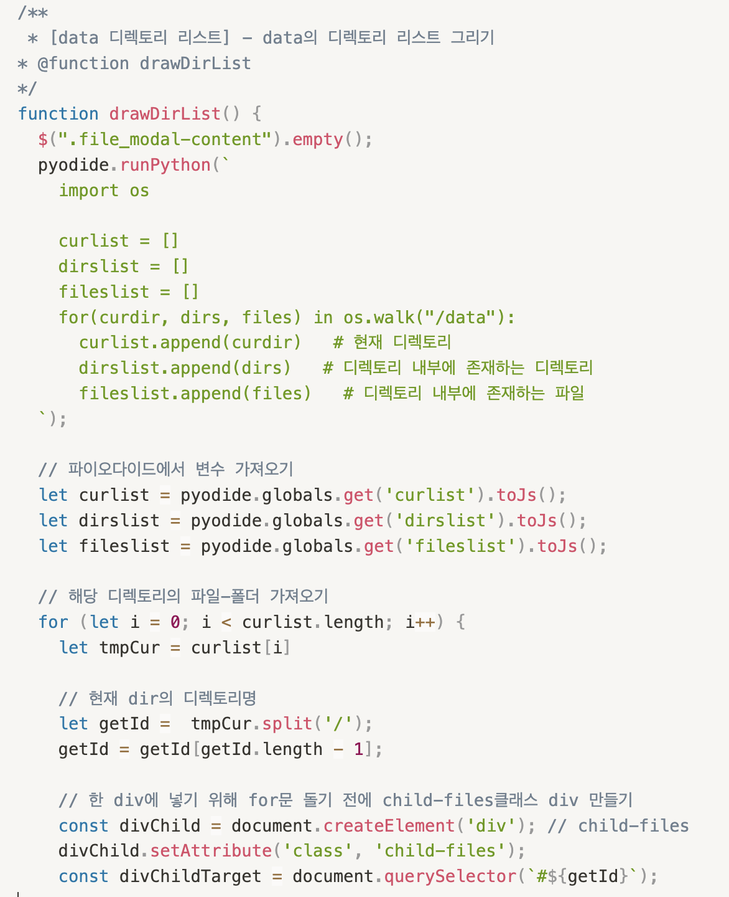

개요

Project information
- Category: Web Application
- Project date: 2020 ~
- Project URL(site): https://codewalks.kr/
- Project URL(YouTube): https://www.youtube.com/@CodeWalks
CodeWalks
누구나 할 수 있는 데이터•인공지능(AI) 융합 교육 플랫폼 CodeWalks 코딩 입문자를 위해 비주얼 블록 코딩으로 쉽게 파이썬 텍스트 코드를 생성할 수 있는 코딩 교육 플랫폼 입문부터 데이터분석, 머신러닝, 인공지능, 이미지처리, 직업교육 등 다양한 라이브러리를 통해 실무예제의 사용이 가능합니다.
서비스 아키텍처
- Blockly
앱에 블록 기반 코드 편집기를 추가할 수 있는 웹 라이브러리입니다. 편집기에서 블록과 같은 퍼즐 조각을 사용해 변수, 논리 표현식, 루프 등의 코드 개념을 나타낸다. 이를 통해 사용자는 구문이나 명령줄에 대한 부담을 겪지 않고도 프로그래밍 할 수 있습니다. - Pyodide
Python 프로그래밍 언어를 웹 브라우저로 가져오는 오픈 소스 프로젝트입니다. 사용자가 웹 페이지에서 직접 Python 코드를 실행할 수 있으므로 데이터 과학, 과학적 컴퓨팅 및 대화형 웹 애플리케이션에 유용합니다. - WebAssembly
바이너리 프로그램을 웹 브라우저에서 실행하기 위한 표준으로 기존 웹 브라우저에서 실행할 수 있는 표준 언어는 JavaScript언어 뿐이었으나 이는 동적 타입 인터프리터 언어라는 한계로, 웹 어셈블리를 통해 바이너리 파일로 컴파일 되고, 정적 타입을 사용해 웹 페이지에서 고성능 애플리케이션을 구동할 수 있다. - Emscripten
WebAssembly를 위한 컴파일러 툴체인인 Emscripten을 이용하면 C / C++로 구현된 코드를 WebAssembly 코드로 바꿀 수 있습니다. Pyodide는 Python의 레퍼런스 구현체인 CPython이 C로 구현되어 있다는 점에서 착안하여, Emscripten을 이용해 CPython 인터프리터를 WebAssembly 모듈로 컴파일한 뒤 브라우저 상에서 실행시키는 방식을 사용합니다.
주요 기능
1. 블록을 이용한 파이썬 코딩
- 블록의 경우 왼쪽의 카테고리별로 나눠져 있는 영역에서 마우스를 이용한 드래그 앤 드롭으로 조합이 가능합니다.
- 블록의 코드는 실시간으로 오른쪽 상단의 코드 창(CodeMirror) 영역에서 실제 파이썬 코드로 번역됩니다.
- 클릭 이벤트 발생시 runButton 함수를 통해 사용자가 작성한 코드를 Pyodide를 통해 실행, 결과를 가져와 출력합니다.
- 오른쪽 하단의 콘솔에서 해당 결과를 확인할 수 있습니다.
2. 그래프 출력
- Python의 시각화 라이브러리인 Matplotlib, Seaborn을 오른쪽 창에서 확인할 수 있습니다.
- 해당 결과는 여러 파일의 형태로 저장이 가능합니다.
3. 텍스트 코딩
- 블록 뿐 아닌 텍스트 모드를 이용해서도 코딩이 가능합니다. 해당 정보는 블록에 있는 정보를 텍스트 코드 조각의 형태로 만들어 사용자가 편하게 사용할 수 있도록 하였습니다.
- 블록의 정보들은 MariaDB에 저장되어 있고 함수별 언어에 대한 정보, 블록을 구성하기위한 정보가 담겨 있습니다.
4. Pyodide 파일 시스템

- Pyodide의 파일시스템을 이용해 사용자가 여러 파일을 업로드, 수정, 다운로드가 가능하도록 구현했습니다. 구글의 Colab을 벤치마킹 하였습니다.
- 파일 트리의 경우 파이썬 코드를 통해 먼저 현재의 파일 위치를 파악한후 자바스크립트 코드를 이용해 트리구조 형태를 그리는 방식을 사용했습니다.
- 원하는 파일을 더블 클릭해 다운로드를 받을 수 있으며, 상단의 아이콘을 통해 파일 업로드, 삭제 기능을 구현하였습니다.